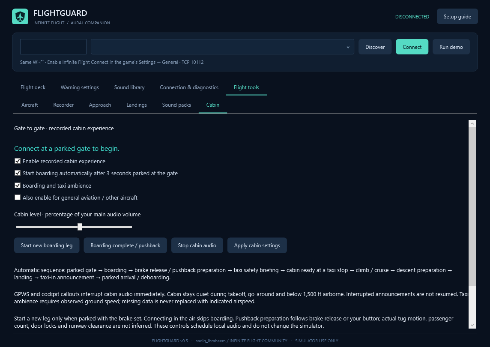

Created for Infinite Flight Community member sadiq_ibraheem.
Welcome/boarding, boarding complete, safety, taxi ambience, cabin preparation, descent/landing, taxi-in and arrival/deboarding use observed flight history. General aviation is opt-in. Joining in the air skips boarding. Actual passengers, tug movement, door state and runway clearance are not inferred. Buttons schedule local audio only.
Cabin is quiet during takeoff/go-around and below 1,500 ft airborne. Interrupted announcements do not resume. Stop cabin audio preserves GPWS; enable and Apply to resume. Shared recordings may retain their original aircraft/airline wording.

Per-aircraft settings, local recording/replay, approach monitoring, estimated landing reports and sound-pack repair are included. Target speed 0 disables speed checks. V-speeds load disarmed. AGL is taken directly in feet. Landing figures are sampled estimates, not impact G or runway alignment.
195 WAV mappings; 12 downloadable packs with 194 originals. There is no speech-synthesis fallback. OEM sets are incomplete; windshear and spoken go-around recordings remain missing. Polling targets 50 ms, limited by the device/network. GPWS logic is a simulator approximation.
Keep the app folder writable. Data contains settings, profiles, flights, reports and pack backups. No telemetry is uploaded. Replay disconnects live telemetry and restores settings. Import limits: 300 MB / 500,000 frames / 1,000,000 events.
Code/branding: MIT. Audio has separate GPL and CC BY-NC-SA terms; preserve notices and provenance. The full audio bundle is not an unrestricted commercial library.
Plain-text guide · GitHub source and releases · Simulator use only.